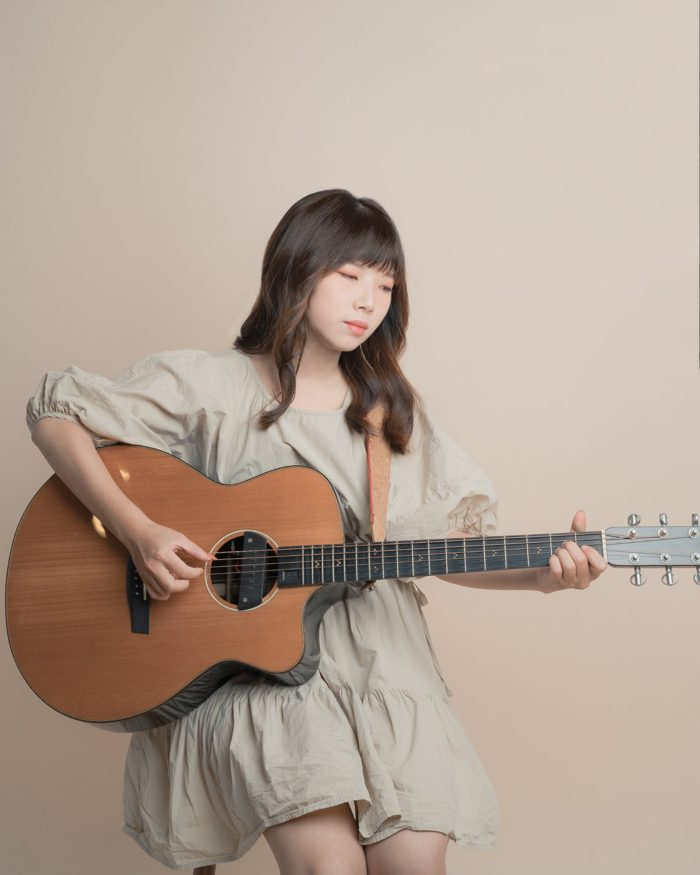
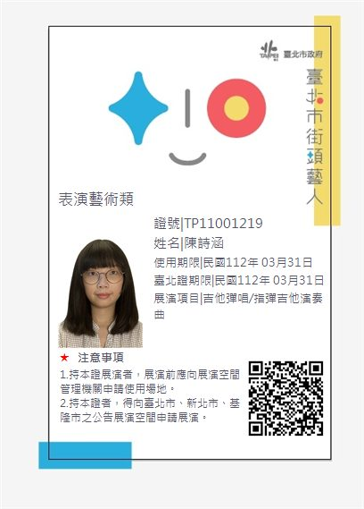
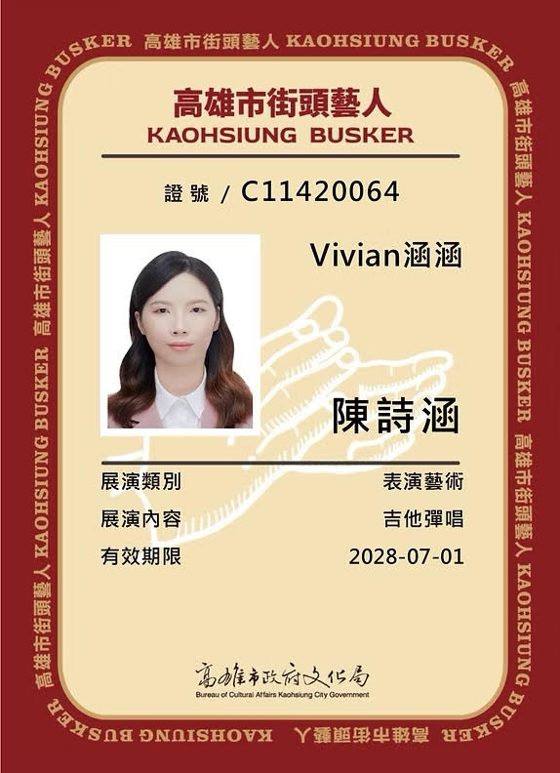
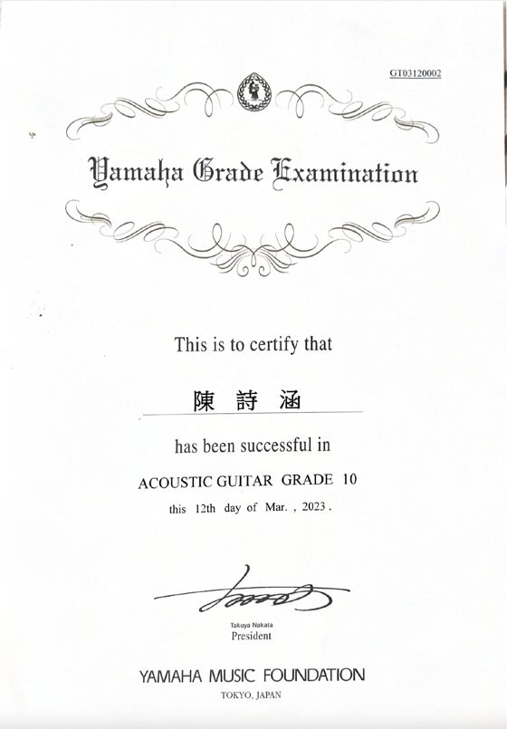

教學經歷
5年以上教學經驗|現任4間音樂教室教師

教學項目民謠吉他｜電吉他｜烏克麗麗
- 2022/02 - Now無私音樂
- 2025/03 - Now樂秀音樂
- 2025/07 - Now樂霓音樂教育中心
- 2025/07 - NowHow Music好音樂
- 2022/03 - 2025/10民揚樂器 鳳山店
- 2021/02 - 2021/06禾果音樂
學員回饋
以前在家完全不會碰吉他，
現在每天都自動練習，
而且一練就是兩個小時。
從跟老師上課後，
比較敢在陌生人面前表達和唱出來，
也找回了彈吉他的快樂。
從一個對吉他零基礎的我，
到現在學會自彈自唱和指彈歌曲。
姐姐學過、妹妹考過檢定
今年弟弟也來了
檢定與證照


